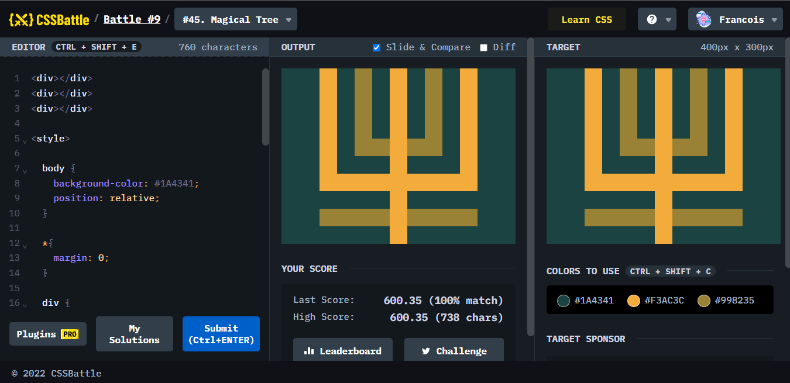
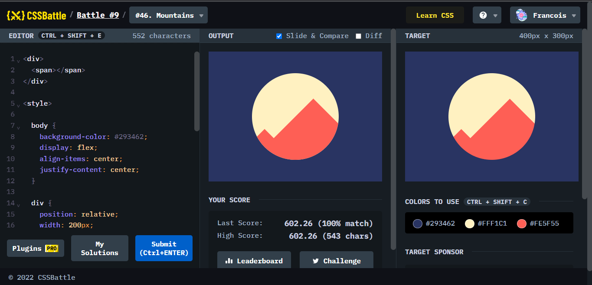

Battle.9では、2問が出題されていて、次回の大きなCSS Battleに力を備えるようにとなっていました。どのような問題かみてみましょう。

ポイント
box-shadowとborder、直線の正しい配置。marginというお題のため、たくさん直線を作って移動させる狙いがあったと思うが、いつも通りの方法で完成。

ポイント
overflow:hiddenの使い方があやふやになっていたことが発覚した。まずは、隠したいもののposition:relativeとabsolute、そして親要素と子要素(疑似要素は可能)を気にしておらず、いつものようにnth-of-typeでしようとしたら、効かなかった。そこで、大きな円をdisplay:flexを使った上下左右中央寄せの方法を用いてセンターにして円をrelativeにして親要素に、山の部分をabsoluteにして子要素にすることで実現できた。